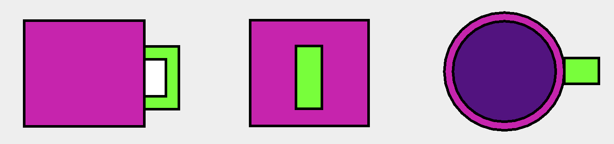

Galléria



A feladat egy hétköznapi tárgy megvalósítása egy GUI-ban (Graphical User Interface). Az általam választott tárgy egy bögre volt. Mivel a bögrék végtelen sok formát öltenek, ezért az egyszerűség kedvéért négyzetek és ellipszisek alkotják a bögrék struktúráját. A bögre kinézetét és formáját csúszkák segítségével és egy színválasztó panellal lehet módosítani. Bizonyos feltételek mellett a bögrék sokasága korlátlan!
A bögre méreteinek állítása csúszkák segítségével történik. A méretek sorra x_szélesség, y_szélesség, magasság. Ezek 25-100mm-ig terjednek. A csúszkák egymástól teljesen függetlenül változtathatók.
A kiválasztott rész/szín panelnál fontos megemlíteni a kiválasztott színt. Mint az az ábrán is jól látható, a kiválasztott színtől függ a betűszín. Ennek oka, hogy egy átlag felhasználónak az RGB színek számszerinti kiírása semmitmondó lett volna, így ezt elkerülve a betűszín színe változó lett. Ha nincs semmilyen szín kiválasztva, akkor a szöveg „Selected” helyett „None” szöveget fogja kiírni és a szín feketére vált.
A színválasztó gomb (Pick a color) lenyomásával egy grafikus felület nyílik meg, ahol 5 különböző színpaletta közül lehet megadni milyen színnel szeretnénk dolgozni (ilyenek pl.: RGB, CMYK, stb.).
A program 3 különböző nézetből jeleníti meg a tárgyat. Felülről, alulról és oldalról. Ezekről példákat ide kattintva láthat!
A bögre adatai menüpont az alábbi adatokat írja ki:
A dátum a program megnyitásakor a jelenlegi dátumot írja ki ÉÉÉÉ-HH-NN formátumban, azonban fájl betöltésekor az adott fájl mentési dátumát fogja megjeleníteni.